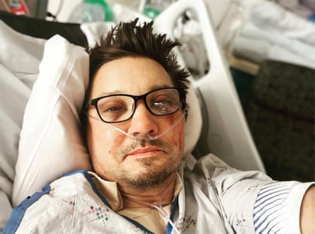
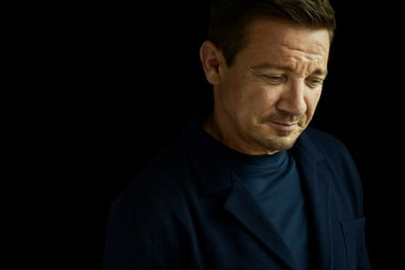
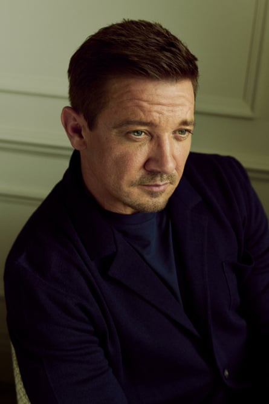
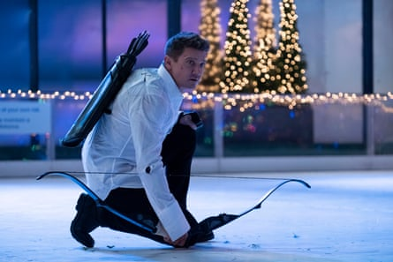
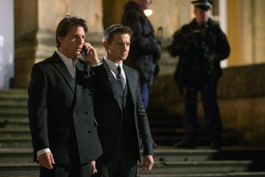
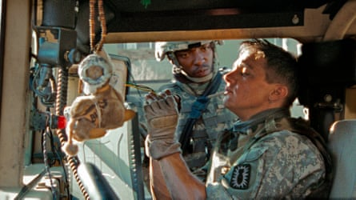
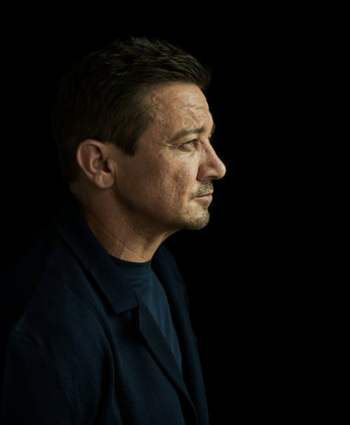
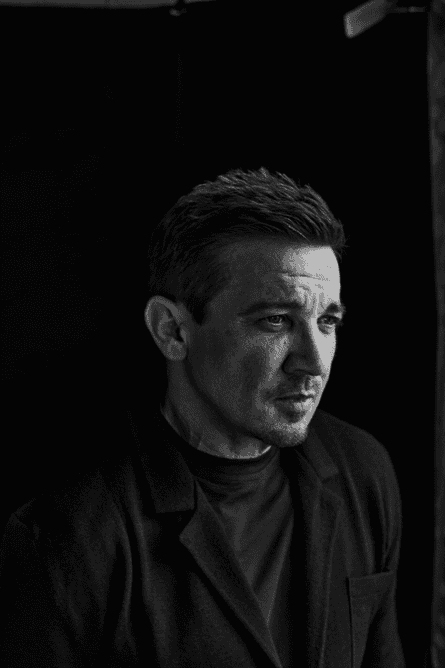

S ix ribs broken in 14 places. Three breaks in the lower pelvis. Right and left ankle broken. Left tibia broken. Left wrist fractured. Left toes, three breaks. Right clavicle broken. Right shoulder blade cracked. Eye socket, jaw, mandible, all broken. Major laceration back of head. Lung collapsed. Liver pierced from rib bone. The inventory of Jeremy Renner’s injuries, documented by the twice Oscar-nominated movie star himself, was exhaustive. It was a miracle that the actor had survived; he had no right to. Renner had been crushed by his own 14,000lb (6,350kg) snowplough on New Year’s Day 2023. A neighbour who helped him at the scene believes he died momentarily. So does Renner. He tells me it was a very special moment.
“What I experienced when I passed was this collective divinity and beautiful, powerful peace. It is the most exhilarating peace you could ever feel. It’s the highest adrenaline rush. Everything stopped … maybe for 30 seconds, maybe a minute. It was definitive for me. It all made perfect sense.” Does he believe in God? “No. My dad’s a theologist and I studied all religions growing up, so I steer away from religions.”
Today, Renner is sitting in front of me in a London hotel, very much alive, looking fit, flawless and grateful. He’s written a memoir, My Next Breath. It’s not simply the story of surviving against all odds, it’s the story of a man who found a new sense of purpose in extremis. “Being here to talk about my book is so different from having to talk about Mission: Impossible!” he says before he’s even sat down. What’s the difference? “Well, we’d be talking about stunts and the joy of being in a big action movie with one of the biggest stars around, Tom Cruise.”
However much enthusiasm he tries to muster for chatting about the Mission: Impossible franchise, it’s obvious which subject he prefers. “The big difference is fiction and nonfiction. I have a real issue now with fiction. I don’t have much time in my life for it, having come back from such a pretty harrowing experience of real reality. I have to focus on reality even though I play make-believe for a living. I have to really believe in my recovery to walk again right and to breathe again right and to love and … experience … and …” He trails off, a fog of words disappearing into the ether.
Has that created an existential crisis – being an actor who doesn’t want to act? “I had a battle with that, because a year ago my real battle was with just walking, right? I had to focus so much energy just on walking.” He mumbles some more – think Elvis in Vegas. I catch half-sentences about making series two and three of the Mayor of Kingstown, in which he plays rock-hard powerbroker Mike McLusky, learning to trust his body again, getting used to the real world.
Renner posts a selfie from his hospital bed days after his accident in January 2023.Photograph: Jeremy Renner Instagram
Renner is a classic mumblecore actor. Not quite the full Brando, but he’s good. In films it gives him an easy naturalism and, often, a scary authenticity. In an interview situation, when you’re hanging on to every word, it can be frustrating. It’s not surprising that he was cast as a superhero in The Avengers films and its spin-off TV series Hawkeye. He looks like one – small, strong, compact; a nine-volt battery of a man. In so many movies, he plays the toughest in a group of toughies. Despite his size, he’s the one whom the big guy messes with at his peril. Renner’s characters are often reckless adrenaline junkies on the cusp of crazy.
He is the first person to admit that despite huge success playing these rock-hard superheroes, rock-hard military men ( The Hurt Locker , which earned him a best actor Oscar nomination in 2010), rock-hard criminals ( The Town , which won him a best supporting Oscar nomination a year later), rock-hard black ops agents ( The Bourne Legacy ) and rock-hard analysts (Mission: Impossible), he wasn’t the happiest of bunnies. He often grumbled about his work, hated being away from his daughter Ava, and had recently been involved in a humiliating public divorce in which all sorts of allegations were slung at him.
For most of the time, he just wanted to be at home relaxing with his huge extended family (Renner is the oldest of seven siblings), his friends, and most of all Ava. Which, ironically, is what he had been doing when the accident happened. He had driven over from his former home in the Hollywood Hills to his residence near Reno, Nevada, which he calls Camp Renner. This was where the family would meet to mark special occasions and enjoy skiing and snowboarding.
The six-acre estate at Lake Tahoe sits 7,300ft above sea level on a private road off the Mount Rose Highway. Renner renovated the property himself after buying it in 2012 (he has had a lucrative and satisfying sideline in renovations – or Rennervations, as he calls them – throughout his acting career).
Photograph: Sebastian Nevols/The Guardian
On 30 December 2022, the Tahoe Daily Tribune reported that there could be up to 5ft of snow and the forecast had been upgraded to a winter storm with gusts possibly exceeding 100mph for Sierra ridges. By 31 December, they had no mobile phone service and no internet at Camp Renner, and they were snowed in. But with the help of his tank-like snowcat, they were still hoping to ski on New Year’s Day. The snowcat is an industrial snow remover – a cab sits above six sets of heavy wheels and two sets of galvanised steel tracks made up of 76 blades that extend outward beyond the body of the vehicle.
It was 6am when Renner jumped into the snowcat. He was hoping to clear the driveway and dig out the parked vehicles. It was a big job, so he asked his 27-year-old nephew Alex to help him. Once they were done with the driveway, they’d be fine – the main road had already been ploughed. They had cleared most of the snow when Renner got out of the snowcat to have a word with Alex. That’s when the vehicle began to slide on the icy asphalt. Renner realised he hadn’t put the brake on. The snowcat was heading straight for Alex, who was trapped between the monster machine and a pickup truck. The only chance to save his nephew was to leap across the snowcat’s 3ft metal tracks and up into the cab and hit the stop button. He remembers shouting, “Not today, motherfucker”, as he thought Alex was about to be crushed to death. The response of an action hero.
Renner missed the cab. He was catapulted forward, off the spinning metal tracks, on to the ice. The snowcat continued to charge forward, and over him. “There came terrible crunching sounds as 14,000lb of galvanised steel machinery slowly, inexorably, monotonously, ground over my body. It was a horrifying soundtrack,” he writes in My Next Breath. “Skull, jaw, cheekbones, molars; fibula, tibia, lungs, eye sockets, cranium, pelvis, ulna, legs, arms, skin; crack, snap, crack, squeeze, crack. More sounds: a ringing in the ears, as if a large-calibre gun had unloaded next to my head. A sting of bright white in my eyes – I am blinded by a coruscating lightning, a lightning that signals the break of my orbital bone, causing my left eyeball to violently burst out of my skull.”
It felt like an eternity, but within a few seconds the snowcat had passed over him. It was still surging forward, but Alex had managed to get out of its way. Would the snowcat have hit Alex if he’d not intervened? “It’s hard to say. You’ve not got time to make a rational decision. You just do it. The worst scenario is that he is crushed. So I just had to act. There was no way I was going to take that risk and see my nephew’s head on the ground cut in half. No chance. I’m not doing that. I’m not taking the chance, so that’s why I’d do it again in two seconds.”
Renner’s still not sure how he survived. So many factors played a part. He cites the Lamaze breathing class he went to aged 12 with his mother when she was pregnant; he went on to use the technique in auditions or when he was stressed. Renner used to have a placard on the wall in his apartment saying “Don’t forget to breathe”. But at the time of the accident, the act of doing so was excruciating. As he struggled for oxygen, carbon dioxide built up in his lungs and bloodstream, and he felt that he was drowning. On the recording of his neighbour’s emergency call you can hear Renner trying to breathe. Each guttural groan sounds like a death rattle. One technique he used was to repeat the expression “hookers, whores and hamburgers” in a mantra-like way, because the huffing of the “H” forced him to work his lungs.
His two neighbours, Rich Kovach and Barb Fletcher, whom he had never met before, stayed with him, keeping him alive as he lay in a pool of blood. Alex sat on his haunches, holding up Renner’s smashed arm to prevent it flopping into his crushed rib cage and punctured lung and stopping him from breathing. Renner’s left eye had landed on the ice; he could see it with the eye that was still in its socket. (Amazingly, he could also still see with the eye that was hanging out.) Dark thoughts began to intrude. “Am I going to live like I’m in some kind of petri dish, a fucking science experiment? Will I just be a brain inside a ruined body? A vegetable.” And yet part of him thought if he could just ease the cramp, he’d be able to walk back to the house.
Meanwhile, Fletcher held his head and kept talking to him, desperate for him not to lose consciousness. “Just keep breathing,” she told him. “Just take shallow breaths. Stay with us. Keep your eyes open.” It was Fletcher who was holding him when he went clammy and his skin turned green-grey.
Renner tells me today that so much of it was down to willpower. “I was bullying my body into thinking it wasn’t that bad and my mind was overcoming the greatest odds it’s ever come up against. My mind was saying, ‘Nah!’ It was part stubbornness. ‘I don’t want to lose this battle, this game’, but the deeper part, the zoomed-out part, is I had so much to live for. I had a bunch of people waiting for me to go skiing!” He smiles. He knows it was a ridiculous thing to be thinking, but it kept him going. “I didn’t want to let them down. That became such a big thing.”
Photograph: Sebastian Nevols/The Guardian
But, of course, there was more to it than willpower. Last year, he released his second album of largely self-penned songs. Love and Titanium is about the accident, and so called because these are another two things that have helped him pull through – the love of family and friends, and the titanium that has helped fix all those broken bones. He was also extremely lucky. Nobody gave him much hope at the time – Alex, Kovach and Fletcher, the medical team who helicoptered him to hospital, the paramedic who pierced his chest cavity to enable him to breathe more easily, all thought he was a goner. “That guy who impaled my chest to release the pressure was a friend of a friend, and he called my friend after he did it and he said, ‘We did the best we could.’”
A lmost as amazing as his survival was the fact that he only stayed 12 days in hospital. In fact, high on morphine and fentanyl, attached to drips and unable to walk, he tried to escape far earlier. “It was the slowest breakout ever,” he says, laughing. As he talks, I’m looking him up and down for signs of damage. Nothing. Eventually I spot an elegant circle around his ankle. It looks more like a bracelet than a war wound. Is that a scar, I ask. He nods. “I have a bunch of little scars, but only from the surgery to save my body. The whole leg is titanium from the knee down to the ankle.”
Is he still in pain? “My mouth is still complete chaos.” Let’s have a look, I say. He opens wide, obligingly. “It looks fine, but when I bite down it feels as if I’m going to break all my teeth.”
As an actor, Renner was famous for his athleticism and suppleness. Like Cruise, he did his own stunts. Are there things he can no longer do? “I don’t know. In my mind no, in my body probably. I’m also 54. But my mind still thinks I’m 20.”
The first song on Love and Titanium is called Lucky Man. “One day you just wake up / And finally realise / Life is so god damn beautiful / And I ain’t got nothin’ left to lose.” Renner tells me that it took him the accident to realise just how beautiful life was. Now, he says, he wakes up and knows he’s not going to have a bad day. No day alive is a bad day. But it didn’t used to be like that.
Some people are natural celebrities. Renner is not one of them. He struggled with his fame. In the TV series Hawkeye, there’s a scene where his eponymous superhero is in a public toilet, and the man peeing next to him asks for a selfie. He says this happened to him in real life. At airports, he would often eat his meals in the toilet cubicles to avoid the public. He loathed the way some fans thought they had a right to his time whatever he was doing. And then there was the way people assumed they knew him, though they tended to talk to him as if he was the character they’d last seen him playing. He felt it was diminishing. “As a celebrity, you’re a product and you’re viewed as a bunch of different things. I might be Hawkeye to somebody, I might be this to somebody else, but I’m still a man; just a human eating spaghetti with my daughter.”
Renner in TV miniseries Hawkeye, 2021.Photograph: Chuck Zlotnick/Image supplied by Capital Pictures
With Tom Cruise in Mission: Impossible – Rogue Nation, 2015.Photograph: Paramount/Everett/Shutterstock
That’s all changed. He loves the way people now talk to him as Jeremy Renner , the man who survived a terrible accident. He feels people can relate to him, at last. We might not have been run over by a 14,000lb snowplough, but all of us have experienced bad luck in one form or another. “There’s a beautiful intimacy and openness and vulnerability and kindness and thoughtfulness I get from people now, instead of just taking their deserved selfie. It’s a different human exchange. I think it’s given them a pathway. They feel, ‘He’s a human just like I am.’”
I tell him that I like the honesty of his book. He writes that he was a man who was hard to love. At times he comes across as grumpy, churlish and antisocial. Has that changed? “I think all the parts of the recipe that made me are still there. But I don’t think I have much time to be grumpy now.” Why was he so grumpy? “I was dissatisfied with a lot of things in my life.” Such as? “Not having my life!” In what way? “I was the one putting all the obstacles in my way. By obstacles I mean jobs. I was wildly successful, and I wanted to take advantage of every opportunity I would get. But it wasn’t healthy for a balanced life. Four birthdays in a row I didn’t see one family member. You’re always doing amazing things – Avengers, The Bourne Legacy and all these great big movies. Awesome! But the dissatisfaction was not being with those I love.”
With Anthony Mackie in The Hurt Locker, 2008.Photograph: Ken Regan/THA/Shutterstock
With Rachel Weisz in The Bourne Legacy, 2012.Photograph: Universal/Everett/Shutterstock
Why did he keep doing it if it made him unhappy? “I knew there was going to be an ending to this stuff. So I had to put these franchises as the priority. I caught fire from The Hurt Locker and then all these great opportunities came along. It was the Academy Awards two years in a row, my mom was my date, all these great blessings, and that was great. But only when the movies came out did I really get to see my family [for the premieres]. There are 25 of us. A bus has to come and pick up the family, but I was still missing out.” And when he wasn’t making movies, he was renovating houses. “I built 26 homes in 20 years. And my music was also a priority. So I had all these things spinning. I just know where my priorities lie now, and nothing can get in their way at this point.”
Renner comes across as supremely competitive in the book. In the 1980s, his father managed a bowling alley in Modesto, California where the actor grew up. By the age of 12, he says, he was good enough to bowl against professionals in a competitive league. But that wasn’t enough for him. He wanted to be the best, and when he wasn’t he went into meltdown. “Self-doubt turned into hatred, hatred into anger, anger into rage,” he writes. In the end, he walked away from bowling.
He also makes it clear that he always expects the best from those around him. When he feels disappointed by friends or family members, he’d give them a good, sharp Renner Talk, “where I challenge people to improve, to commit harder, to face their failings and be better, to not be afraid”.
He has given himself plenty of Renner Talks over the years. Throughout his 20s he challenged his fears. Anything he was frightened of, he took on, whether it was fear of success, intimacy, snakes or heights. In the case of sharks, he got a scuba diving licence, then a master diver’s licence and went swimming with them. Ultimately, he says, nothing scared him.
Is he as tough as the characters he plays? “I think I’m softer.” He mulls it over. “I’ve got my mom’s toughness. She has this inner strength, this fortitude.” What about the physical toughness? “Yeah, I get that from her as well. She was an athlete. I also have the soft, curious mind of my father.”
At times, you sound terrifying, I say. I read an interview in which he talked about having to “choke out” men when they were causing him bother. He gives me a butter-wouldn’t-melt look and giggles. “The family do like having skill sets, like the girls like to do wrist locks and know how to throw a throat punch. I’ll show them how to do these things.” But no, he says, he wouldn’t do anything violent – in fact, he does the opposite. “So if somebody is acting hysterical I just touch them, and they’re like, what happened? I get their attention by touching their throat. It’s like giving someone a hug when they’re mad at you.” And he gently taps his throat by way of illustration.
I’m a bit flummoxed. Perhaps I’m confusing him with somebody else. When I get home, I check old interviews with Renner, and sure enough there it is in a 2015 Playboy piece when he says: “This guy got really drunk and pushed Julia Stiles, my co-star [in the 2005 movie A Little Trip to Heaven]. I kindly choked him out and remedied the situation. I’ve also had to choke people out because they pushed my mom or knocked my sister down, but I’ve never felt like a badass.”
Photograph: Sebastian Nevols/The Guardian
Renner is famous for outre comments. In 2015, he and Jennifer Lopez presented the best actor in a television mini-series award at the Golden Globes. Lopez offered to open the envelope. “You want me to do it? I have the nails,” she said to Renner. “You got the globes, too,” he replied, staring at her chest. While many people on social media lambasted him for the comment, he told Playboy: “Actually, Jennifer thought it was fucking funny and got a little sweaty and maybe even turned on by the whole experience. Other people started running their mouths about it. Everybody’s entitled to an opinion, but I can’t be bothered. We gave zero fucks.”
In 2019, Renner met more controversy when court custody filings became public. The actor Sonni Pacheco, 20 years his junior, filed for divorce in 2014 after they had been married for 10 months, but details of their long-running custody battle didn’t emerge till five years later. Pacheco asked for sole custody, saying Renner was an “unfit parent”. She claimed he had talked about killing her and then taking his own life, and that he had bitten Ava’s shoulder. Renner described the allegations as “dramatisations” made with a “specific goal in mind” and denied biting Ava, saying the mark was from a car seatbelt that “pinched” her.
Other people provided statements in support of Pacheco. There were claims that he had put out lines of cocaine on a bathroom counter within Ava’s reach and left her unsupervised for hours. One woman admitted to having a threesome with him, and says she saw him pass out drunk. She said she was shocked when she discovered that Ava had been in the house all the time, at one point coming down the stairs to look for him. Another said she’d seen him put a gun in his mouth and fire it at the ceiling.
In the book, he describes himself as a “cranky, cynical, grubby cat motherfucker”. We’ve heard about the crankiness. Where does the cynicism come from? Spending too long on the east coast, he says. “I think it’s where innocence gets lost or weathered. It’s like east coasters will have more of a mental toughness and their sense of humour is rougher around the edges. More aggressive. You bust each other’s balls, that kind of thing.” And what about the “grubby cat motherfucker?” He bursts out laughing. “The phrase alone makes me giggle. I don’t take myself very seriously. Whatever stress I’ve had in life I’ve tried to find a way of laughing through it. And that’s where sometimes cynicism comes out – you think, I’m just going to have a laugh at this stuff.” What stuff? “Being accused of things you’ve not done, right? That doesn’t feel good to anybody. It certainly doesn’t feel good when you’re a celebrity and it’s known to everybody.”
Are you talking about the allegations in the media at the time of the divorce? “Yeah. Yeah.” Is there any truth in them? “No, and they happen all the time. It’s all the salaciousness that happens out there. It’s clickbait, and it hurts my feelings and it dehumanises people.”
To be fair, I say, you do sound as if you were a party animal. He gives me another butter-wouldn’t-melt look. I mention the stories of threesomes, drugs and boozing. “That’s not really my style,” he says. Really? “People say whatever.” Then he starts to explain. “Look, I live a carnival -type life. I don’t live a normal life. The amount of travel I have done, always living in a suitcase.” And when he was home in LA, he says, he didn’t go out because he was too well known, so he socialised at home. “The place in LA was where I was raising my child, where everyone learned to ride a bike and swim. I also had my music there. I had my meetings there. It was my dating life. It was my club. It was my home. It was all the things that encompass someone’s life. If you meet a person and grab a pint, instead of meeting up at a pub, I’d just do it at my house. It was like an open-door policy for all my family and friends. It was great for them. So that’s not a normal home. Homes aren’t usually like that or run like that way. So that’s no longer.” The way he describes it, it was both a nursery and a night club, and sometimes little distinction was made between the two.
That’s the party lifestyle I was talking about, I say. “Yeah, yeah. Hosting. I just got tired of hosting. And all the clean-up. Hehehe! So by 2019 I was tired of all that. Covid came around and helped me bounce that all out. I just wanted to slow down.”
How did he feel when the allegations emerged? “It doesn’t matter to me what people say,” he says before the question is fully out. “They’re saying it for their own reasons and not for the right reasons or the truth. And I’m used to that, because I’m a public figure. I don’t read people’s reviews, I don’t read people’s comments. I don’t care. That’s not part of my life.”
Ava clearly means so much to him. He now has joint custody with Pacheco, and the book is dedicated to his daughter (“my lifeforce … my everything, my only thing, my number one”). I ask if he feared losing her in the custody battle. “That’s just lawyers talking. That’s lawyers arguing. The custody was easy.” And then he says something surprising. “Her mom and I get along very well, and we’re in each other’s lives. It’s lovely.” Wow, I say – I had no idea. “Yeah, yeah,” he says, enthusiastically. I’ve never read that before, I say, tell me about it. “Well that’s because it’s no one’s business. It’s no one’s business.” True, I say, but then you just read the horror stories. He softens. “It’s great. She’s got a new baby and she sends me beautiful pictures.”
Photograph: Sebastian Nevols/The Guardian
Has he currently got a partner? “No, not at the moment.” (Last year, it was reported that he was dating CC Mason, a fashion journalist 28 years his junior.) A relationship is not a priority at the moment, he says. “I’m pretty focused on my daughter and the foundation for the kids.” The foundation, also called RennerVation, provides support for at-risk children and those in foster care. Shortly before the accident, he made a Disney+ series about his project renovating old school buses to meet a community’s needs, and out of that came the nonprofit foundation.
Rather than acting, this seems now to be his life’s mission. “That’s where the accident’s really shifted my focus. I can still go to work, but my primary focus is to give back and help in any way I can. That’s way more fulfilling than anything else I’ve done, outside bringing up my own child. Being able to put a smile on these kids’ faces and share that joy with them and share the growth, I can’t think of anything more rewarding.”
He feels so much more at one with the world, he says. Take the book. The last thing the old Renner would have wanted to do is share such a traumatic experience. But the accident has led him into a different way of thinking, and now he couldn’t be happier he’s written the book. “It forced me to get out of my own way of being private and a recluse to share something.” You’ve been forced back into the real world? “Yeah. I’ve never been more connected and more open and more vulnerable and more loving. And I’ve never received more goodwill. That connection was buried deep, deep, deep in my soul, beforehand, but now it’s at the forefront. It’s all that matters to me.” He takes a deep breath – long, leisurely and content. “It’s an honour to be alive,” he says.